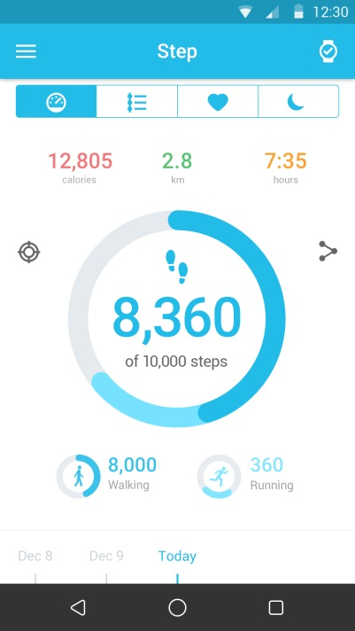

Vanliga frågor för Wi-Fi-klocka (Wifi Watch)
Vad gör jag när min KLOCKA inte kan ringa eller ta emot samtal?
- Se till så att anslutningen mellan din KLOCKA och enhet fungerar normalt.
- Se till så att din KLOCKA inte är för långt ifrån enheten.
- Kolla så att du gett tillstånd åt klockan att ringa samtal. Du ska se en Bluetooth-ikon
 på din enhet efter att du bekräftat och kan sedan ringa och ta emot samtal.
på din enhet efter att du bekräftat och kan sedan ringa och ta emot samtal.

Hur mäter du bäst din puls?
För bäst resultat, spänn fast KLOCKAN om handleden så att den inte sitter löst. Även under idealiska omständigheter kan det hända att KLOCKAN inte registrerar en korrekt puls. För en liten procent användare
kan vissa faktorer göra det omöjligt att mäta pulsen korrekt. För att hjälpa din KLOCKA att göra korrekta avläsningar kan du göra detta:
- KLOCKANS baksida måste nudda huden.
- KLOCKAN måste sitta stadigt på handleden, men ge även lite luft så att huden kan andas och sensorerna göra sitt jobb.
- Du kan spänna fast KLOCKAN medan du tränar och lätta på den när du är klar.
- Sensorerna fungerar endast om du bär klockan ovanpå handleden.
Om din KLOCKA inte sitter fast ordentligt, eller om din puls inte kan mätas, kan du spänna åt den lite hårdare. Din KLOCKA bör bäras stadigt men bekvämt.

Vad gör jag när man KLOCKA inte svarar?
Tryck och håll på Strömknappen i 8 sekunder för att starta om KLOCKAN. Detta bör endast användas när det är absolut nödvändigt.
Varför vibrerar min klocka plötsligt ibland?
- Kolla om du fått en avisering.
- Se till så att din KLOCKA inte är för långt ifrån enheten.
Vad gör jag när vibrationen inte fungerar?
- Ladda batteriet och se till så att det har ström.
- Se till så att anslutningen mellan din KLOCKA och enhet fungerar.
Vad gör jag när min KLOCKA inte laddas?
- Se till så att strecken i laddningsstationen är i linje med strecken på baksidan av din Klocka.
- Se till så att USB-sladden är korrekt isatt i USB-porten.
- Om din KLOCKAS batteri är helt tomt tar det ibland ett tag att aktivera det samt systemet.
Varför ökar batteriförbrukningen efter att MOVETIME-appen installerats och KLOCKAN anslutits?
Detta är normalt och förbrukningen inkluderar:
- Upprätthålla anslutningen mellan din KLOCKA och enheten.
- Filöverföring mellan din KLOCKA och enheten.
- Frånkoppling, enhetsskanning och återanslutning.
Hur många BT 4.0 Lågenergienheter (BLE) kan anslutas till enheten?
Endast 1 BLE-enhet kan vara ansluten åt gången.
Vad gör jag om min KLOCKA ofta kopplas ifrån min enhet?
- Se till så att MOVETIME-appen inte stoppas av ett systemverktyg. Om den har stoppats startar du om appen.
- Se till så att kommunikationen mellan din KLOCKA och enhet fungerar.
a) Kolla MOVETIME-appen på din telefon. Om din KLOCKA ansluter till enheten ser du en
 -ikon i det övre högra hörnet. Om KLOCKAN inte lyckas ansluta kommer
-ikon i det övre högra hörnet. Om KLOCKAN inte lyckas ansluta kommer
 att ändras till
att ändras till
 i mitten av ikonen.
i mitten av ikonen.

b) Om du ser Bluetooth-ikonen
 på din KLOCKA betyder det att KLOCKAN inte lyckades parkoppla med enheten.
på din KLOCKA betyder det att KLOCKAN inte lyckades parkoppla med enheten.
Hur fabriksåterställer jag min KLOCKA?
- Om ingen av åtgärderna ovan löser dina problem kan du testa att fabriksåterställa din KLOCKA.
- I MOVETIME-appen. Tryck på
 och sedan Klocka->Inställningar->Fabriksåterställning för att återställa din KLOCKA.
och sedan Klocka->Inställningar->Fabriksåterställning för att återställa din KLOCKA.
- Tryck och håll inne Strömknappen i 10 sekunder för att starta om KLOCKAN.